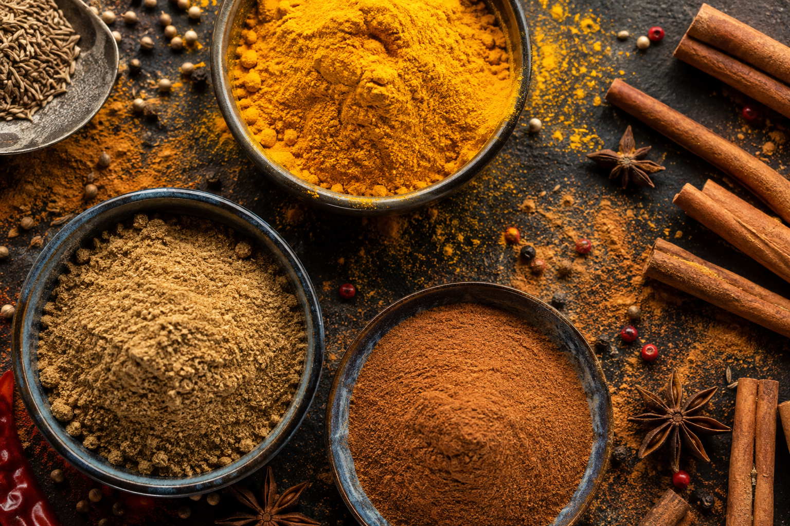
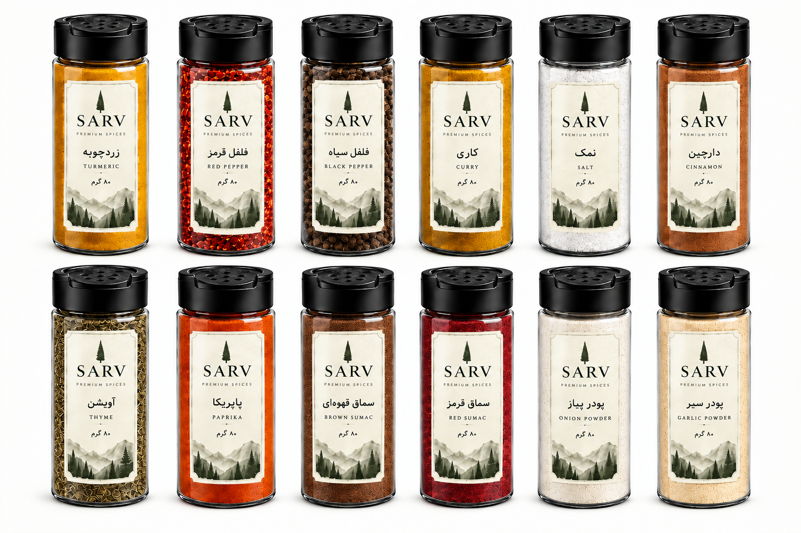
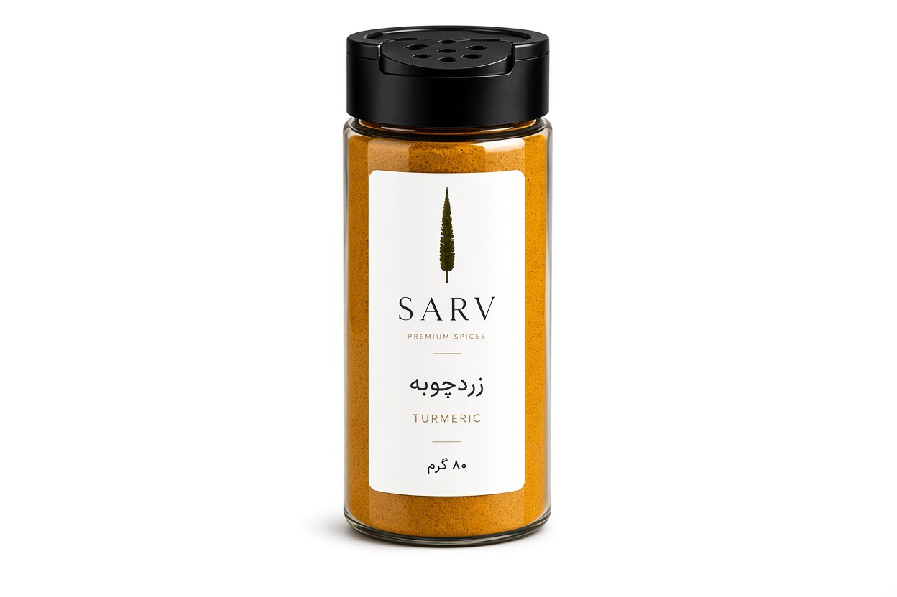
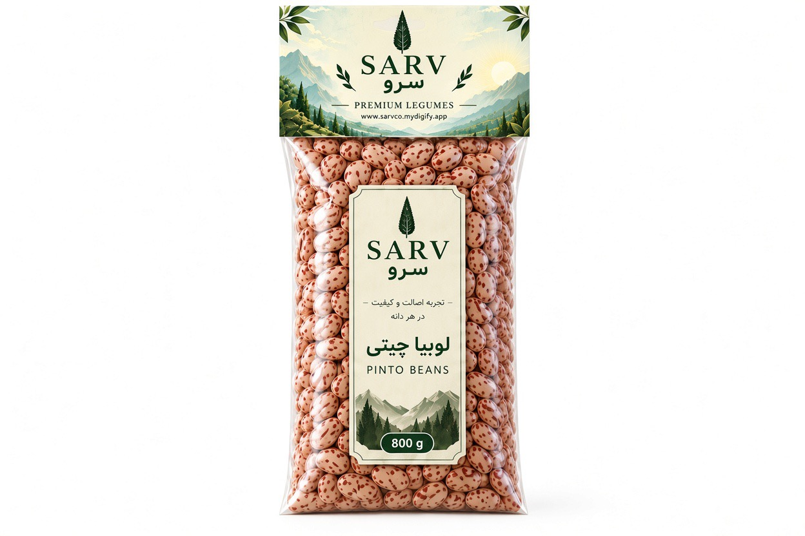
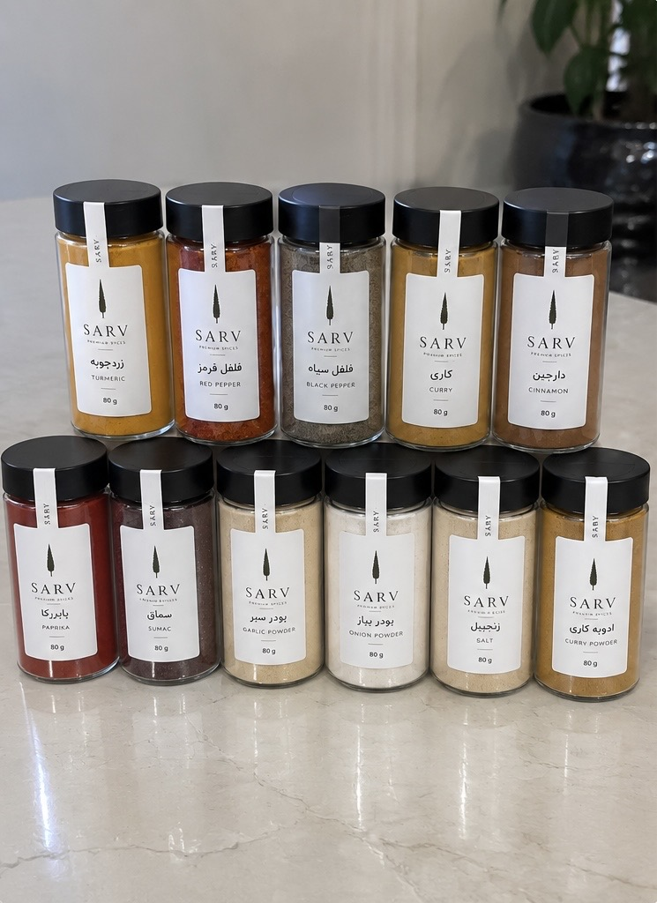

SARV / JOURNAL
مجله سرو
مطالب کوتاه و کاربردی درباره ادویهها، حبوبات، نگهداری مواد غذایی و استفاده بهتر از محصولات روزمره آشپزخانه.

راهنماراهنمای انتخاب ادویه برای آشپزی روزمره
فرق نقش زردچوبه، فلفل، دارچین، آویشن و سماق در غذاها را بشناسیم.
 نگهداری
نگهداریچطور ادویه را برای مدت طولانیتر باکیفیت نگه داریم؟
نور، رطوبت، گرما و نوع ظرف چه اثری روی عطر و کیفیت ادویه دارند؟

نگهداریچطور حبوبات را بهتر نگهداری کنیم؟
نکات ساده برای نگهداری حبوبات خشک در خانه و جلوگیری از رطوبت و آلودگی.

ادویهزردچوبه در آشپزی ایرانی؛ از رنگ تا عطر
کاربردهای رایج زردچوبه و چند نکته برای استفاده متعادل از آن.

حبوباتراهنمای آشنایی با حبوبات پرمصرف
عدس، لوبیا، لپه و دال را بر اساس نوع مصرف بهتر بشناسیم.

آشپزخانهیک قفسه ادویه کاربردی چه چیزهایی لازم دارد؟
چطور با چند ادویه پایه، بخش زیادی از غذاهای روزمره را پوشش دهیم.